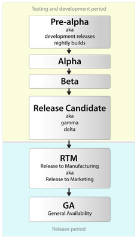

| Error | Exceptions |
| It is impossible to recover from error. | You can recover from exceptions by handling them through try catch blocks. |
| Kinds of error : User Error,Syntax Error , Runtime Error | Runtime Error is Exception while can be handle at runtime via try catch blks |
Syntax Error
bool flag=true
WHILE(flag) //Error C# is Case Sensitive
{
}
Runtime Error
Runtime Error is also called Exception. This can be caused due to improper user inputs, improper design logic or system error.
int a=5;b=0;
int result= a/b;
============================================================================================================
Logical Error
Program Runs but doesnot produce desired result. Diffcult to find .
int a=5;b=6;
double avg=a+b/2.0;
========================================================================================================
Those variables that describe the environment in which programs run.
In Windows, environment variables have a name and value.
For example, the variable name windir may have the value "C:\Windows".
Many programs need to know where to find certain files, and the PATH variable tells them where they can find what they need. Those programs look for a PATH variable automatically, so you don't have to type it all in every time you run the program.
User environment variables have values that differ from user to user. As their name implies, they are specific to your user account, and they store user specific data, like the location of your user profile, the folder where temporary files are stored for your account, the location of your OneDrive folder, and so on. They can be edited by that user account but not by other user accounts. These variables can be set by the user, by Windows or by different programs working with user specific locations.
System variables are global and cannot be changed by any user. Their values are the same for all user accounts. They refer to locations of critical system resources, like the folder where Windows is installed, the location of Program Files, and so on. These variables are set by Windows, by different programs and drivers.
Run : Type env to open Environment Variable Setting Page
FInd all Environment Variable
In cmd type : set
=================================================================================================
Set Java Environment Setting

Under “System variables” click the “New…” button and enter JAVA_HOME as “Variable name” and the path to your Java JDK directory under “Variable value”


1. In “Environment Variables” window under “System variables” select Path
2. Click on “Edit…”
3. In “Edit environment variable” window click “New”
4. Type in %JAVA_HOME%\bin
echo %JAVA_HOME%
So ,when we run java program then it will automatically search in path of system environment variable and here each value is separated by
';' and if it found jdk location there then it will run application.
=========================================================================================================================
Windows service is a computer program that operates in the background.The services run in the background and will usually kick in when the machine is booted.If you need a task which must be done in every second, minute or hour, you should choice Windows Service.
Difference between Windows Service and General Application
Look at : services.msc where you would find services status like running ,stopped,disabled and many more.
Svchost.exe(Service Host)
The purpose for svchost.exe is to, as the name would imply, host services. Windows uses svchost.exe to group together services that need access to the same DLLs so that they can run in one process, helping to reduce their demand for system resources.
If you’ve ever taken a look at the Services section in Control Panel, you’ve probably noticed that Windows requires a lot of services. If every single service ran under a one Service Host process, a failure in one service could potentially bring down all of Windows. Instead, they are separated out.
Services are organized into logical groups that are all somewhat related, and then a single Service Host instance is created to host each group. For example, one Service Host process runs the three services related to the firewall. Another Service Host process might run all the services related to the user interface, and so on.
=============================================================================================Different testing life cycle
Different between OEM,RC,RTM and Retail
OEM(“Original Equipment Manufacturing”).Windows 8 OEM is the edition which comes preinstalled on a computer. So when you buy a PC, the OS edition that you’ll get is this one. The OEM has the same capabilities as the Retail.
RTM: “Release to Manufacturing”. Windows 8 RTM is an edition that is no longer in the development stage, but not released to customers yet.
RC(Release Candidate):It is a beta version with potential to be a final product, which is ready to release unless significant bugs emerge.Release candidates are NOT for production deployment, but they are for testing purposes only.
Retail: This edition is the same as the OEM, but it’s not preinstalled and sold separately in a box, usually at a higher price. You should buy it only if you have a computer that doesn’t have any OS installed, maybe because you’re building it yourself.